Legacy
This part of documentation it was left as reference to old original classic design, because it may still bring value for some Do-It-Yourself users.
In the future this should be moved to another sections in the docs.
Hardware
If you purchased parts from the Donkey Car Store, skip to step 3.
Step 1: Print Parts
I printed parts in black PLA, with .3mm layer height with a .5mm nozzle and no supports. The top roll bar is designed to be printed upside down.
Step 2: Clean up parts
Almost all 3D Printed parts will need clean up. Re-drill holes, and clean up excess plastic.
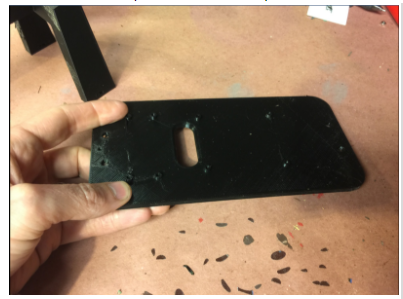
In particular, clean up the slots in the side of the roll bar, as shown in the picture below:
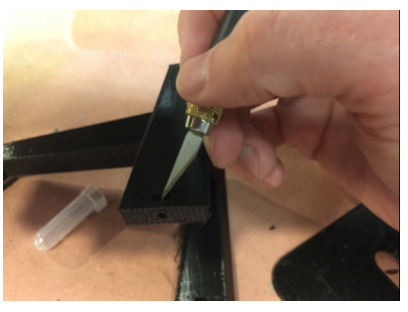
Step 3: Assemble Top plate and Roll Cage
If you have an Exceed Short Course Truck, Blaze or Desert Monster watch this video
Slide the nut into the slot in the side of the roll cage. This is not particularly easy. You may need to clean out the hole again and use a small screwdriver to push the screw in such that it lines up with the hole in the bottom of the roll cage.
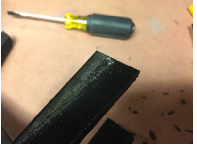
Once you have slid the nut in, you can attach the bottom plate. Once again, this may be tricky. I use the small screwdriver to push against the nut to keep it from spinning in the slot. Good news: you should never have to do this again.
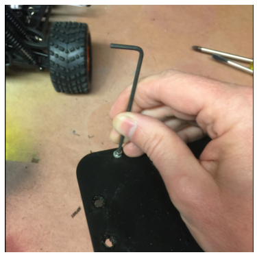
Step 4: Connect Servo Shield to Raspberry Pi
You could do this after attaching the Raspberry Pi to the bottom plate, I just think it is easier to see the parts when they are laying on the workbench. Connect the parts as you see below:
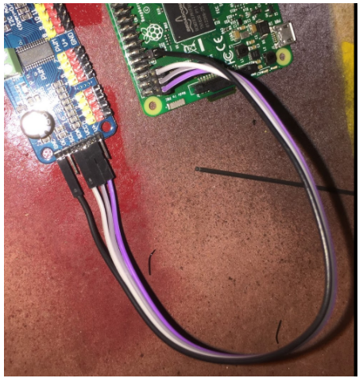
For reference, below is the Raspberry Pi Pinout for reference. You will notice we connect to 3.3v, the two I2C pins (SDA and SCL) and ground:
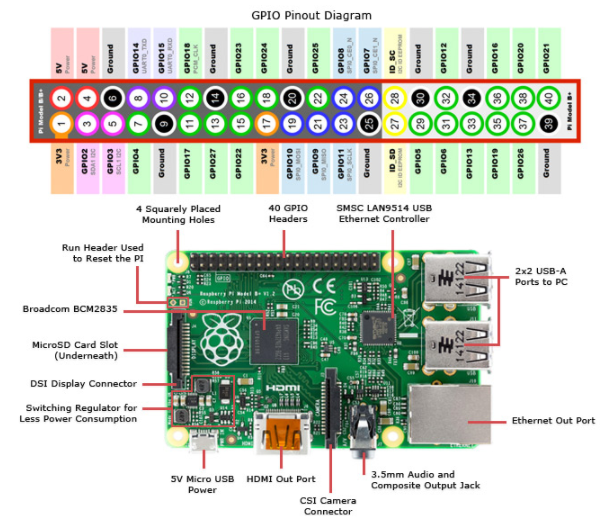
Step 5: Attach Raspberry Pi to 3D Printed bottom plate
Before you start, now is a good time to insert the already flashed SD card and bench test the electronics. Once that is done, attaching the Raspberry Pi and Servo is as simple as running screws through the board into the screw bosses on the top plate. The M2.5x12mm screws should be the perfect length to go through the board, the plastic and still have room for a washer. The “cap” part of the screw should be facing up and the nut should be on the bottom of the top plate. The ethernet and USB ports should face forward. This is important as it gives you access to the SD card and makes the camera ribbon cable line up properly.
Attach the USB battery to the underside of the printed bottom plate using cable ties or velcro.
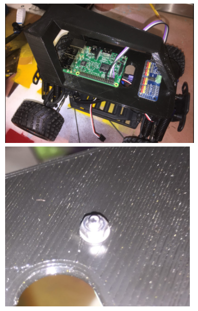
Step 6: Attach Camera
There are two versions of the donkey chassis, the newer one does not have screws, the older one does. This includes instructions for both:
Screwless Design The newer design is pretty simple, just slip the camera into the slot, cable end first. However, be careful not to push on the camera lens and instead press the board. 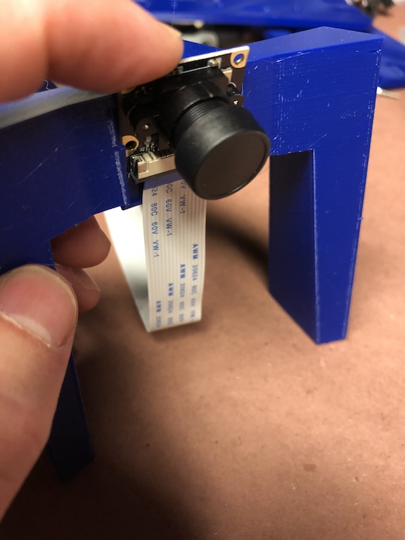
If you need to remove the camera the temptation is to push on the lens, instead push on the connector as is shown in these pictures.
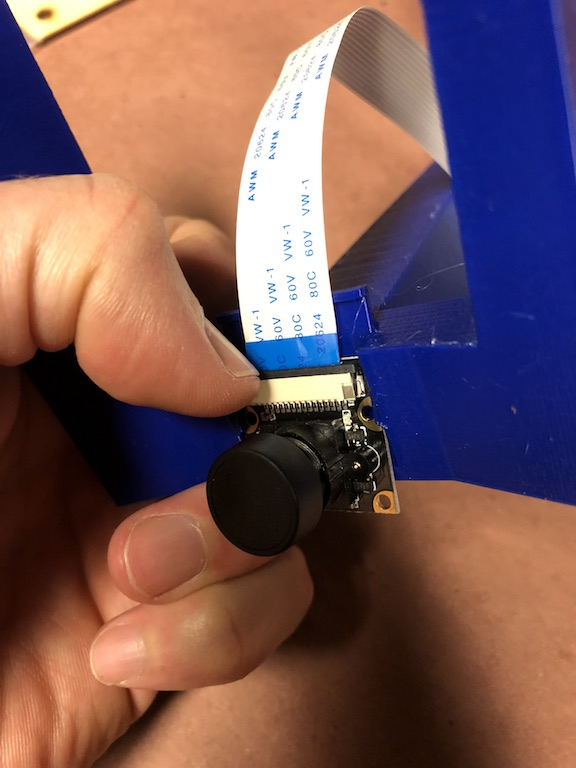
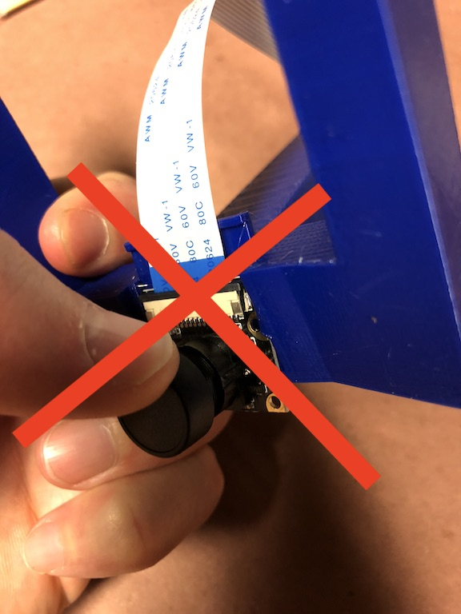
Design with Screws
Attaching the camera is a little tricky, the M2 screws can be screwed into the plastic but it is a little hard. I recommend drilling the holes out with a 1.5mm bit (1/16th bit in Imperial land) then pre threading them with the screws before putting the camera on. It is only necessary to put two screws in.
Sometimes using the two top screw holes can result in a short. Put screws in the bottom two holes.
Before using the car, remove the plastic film from the camera lens.
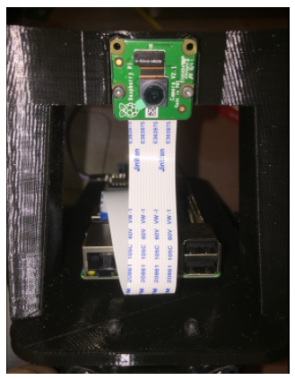
It is easy to put the camera cable in the wrong way so look at these photos and make sure the cable is put in properly. There are loads of tutorials on youtube if you are not used to this.
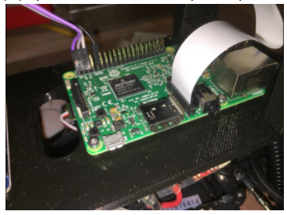
Step 7: Put it all together
*** Note if you have a Desert Monster Chassis see 7B section below ***
The final steps are straightforward. First attach the roll bar assembly to the car. This is done using the same pins that came with the vehicle.
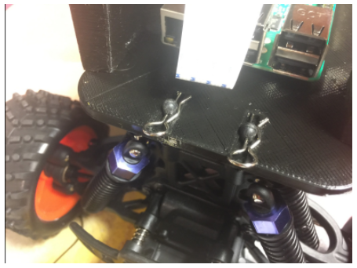
Second run the servo cables up to the car. The throttle cable runs to channel 0 on the servo controller and steering is channel 1.
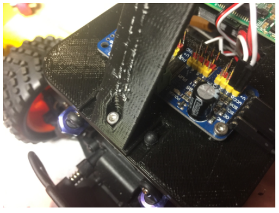
Now you are done with the hardware!!
Step 7b: Attach Adapters (Desert Monster only)
The Desert monster does not have the same set up for holding the body on the car and needs two adapters mentioned above. To attach the adapters you must first remove the existing adapter from the chassis and screw on the custom adapter with the same screws as is shown in this photo:
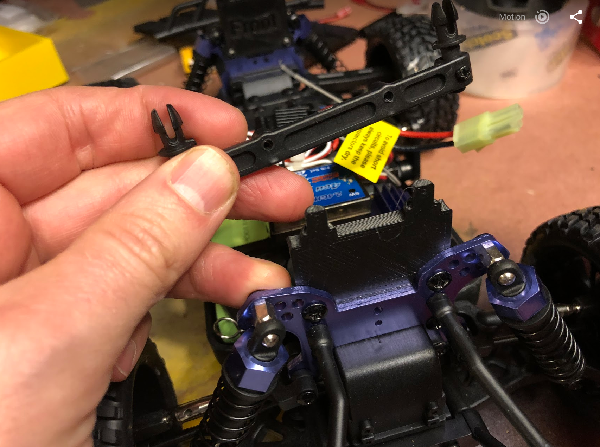
Once this is done, go back to step 7
Software
Congrats! Now to get your get your car moving, see the software instructions section.
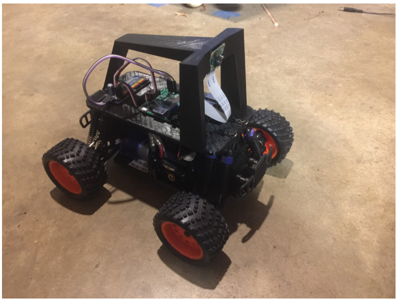